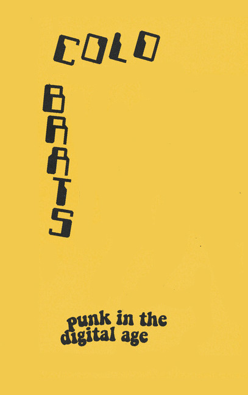
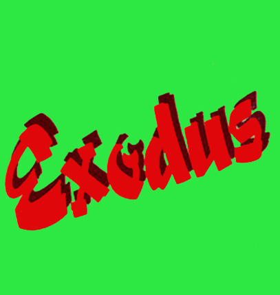
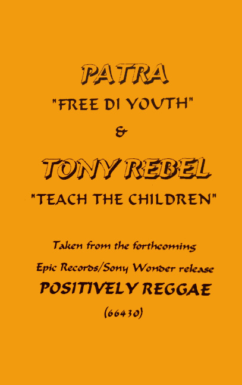

Welcome to my ImageNet project, this project will guide you through 30 different typographic finds of some of the most obscure and memorable cassette typography. Spaning across the three broad categories of 'Punk', 'Psychedelic', and 'Reggae'.
 1. Deep Purple - Shades of Deep Purple (1968)
1. Deep Purple - Shades of Deep Purple (1968) Tracklist
Side A
A1."And the Address” (instrumental)
A2. “Hush”
A3. “One More Rainy Day”
A4. “Prelude: Happiness/I’m so Glad”
Side B
B1. “Mandrake Root”
B2. “Help!”
B3. “Love Help Me”
B4. “Hey Joe”
 2. Thee Oh Sees - Drop (2014)
2. Thee Oh Sees - Drop (2014) Tracklist
Side A
A1. "Penetrating Eye”
A2. “Encrytped Bounce”
A3. “Savage Victory”
A4. “Put Some Reverb on My Brother”
Side B
B1. “Drop”
B2. “Camera (Queer Sound)”
B3. “King’s Nose”
B4. “Transparent World”
B5. “The Lens”
 3. Black Magick SS - Hidden in plain sight (2015)
3. Black Magick SS - Hidden in plain sight (2015) Tracklist
Side A
A1. “Hidden In Plain Sight”
A2. “Black Magick Army”
Side B
B1. “Wisdom Tree”
B2. “War Of The Sorcerer”
 4. Jimi Hendrix Experience - Are you Experienced (1967)
4. Jimi Hendrix Experience - Are you Experienced (1967) Tracklist
Side A
A1. “Purple Haze”
A2. “Manic Depression”
A3. "Hey Joe"
A4. "Love Or Confusion"
A5. "May This Be Love" A6. "I Don't Live Today" Side B
B1. “The Wind Cries Mary”
B2. “Fire”
B3. "Third Stone From The Sun"
B4. "Foxy Lady"
B5. "Are You Experienced?"
 5. Mad Professor - Psychedelic Dub (1990)
5. Mad Professor - Psychedelic Dub (1990) Tracklist
Side A
A1. “Cool Runnings Mandela”
A2. “Go Deh Nelson, Go Deh”
A3. "In King David's Style"
A4. "Don't Drink The Piss"
A5. "1990 Ariwa Style"
Side B
B1. “Psychedelic Dub”
B2. “Bammie' Riff”
B3. "Raging Storm"
B4. "Open Troppen"
B5. "Man From Senegal"
 6. Satan's Mercenaries - Assassination (2020)
6. Satan's Mercenaries - Assassination (2020) Tracklist
Side A
A1. "Blood Magic"
Side B
B1. "The Fulfillment"
 7. Christian Bland & The Revelators - The Lost Album (2010)
7. Christian Bland & The Revelators - The Lost Album (2010) Tracklist
Side A
A1."Don't Talk Today"
A2."Jabberwocky"
A3."Flashing Signs"
A4."I See You"
A5."Emotionless Man"
A6. "Ho Chi Minh"
A7. "Katy"
A8. "Icy Gray"
Side B
B1. "Wishing Well"
B2. "Psychic Haze"
B3. "Tallahassee Lassie"
B4. "Don't Talk Today Pt.2"
B5."Murder At My La"
 8. Gap Dream - Self Titled (2016)
8. Gap Dream - Self Titled (2016) Tracklist
Side A
A1."Greater Find:
A2."Rock And Roll:
A3."College Music:
A4."24 Hour Token:
A5."Party Foul"
A6."Jacky"
Side B
B1."153"
B2."Golden Shoes"
B3."Modern Rhythms"
B4."Judy Let Me Roam"
B5."Shy Boy"
B6."A Stranger To Myself"
 9. DJ Lenin - First Vision (1998)
9. DJ Lenin - First Vision (1998) Tracklist
Side A
A1. "Zirrex Cosmic Illusion"
A2. "F.U.Z."
A3. "Galaxian Upstream"
A4. "Acidoohunculus"
Side B
B1. "J.E.J. (Where R. U. RMX)"
B2. "Aqua"
B3. "Transdriver Crash"
B4. "Project Bee"
 10. Nico and The Velvet Underground - The Velvet Underground & Nico (1967)
10. Nico and The Velvet Underground - The Velvet Underground & Nico (1967) Tracklist
Side A
A1."Sunday Morning"
A2."I'm Waiting For The Man"
A3."Femme Fatale"
A4."Venus In Furs"
A5. "Run Run Run"
A6. "All Tomorrow's Parties"
Side B
B1. "Heroin"
B2. "There She Goes Again"
B3. "I'll Be Your Mirror"
B4. "The Black Angel's Death Song"
B5. "European Son TO Delmore Schwartz"
 11. Black Flag - Live '84 (1985)
11. Black Flag - Live '84 (1985) Tracklist
Side A
A1. “The Process Of Weeding Out”
A2. “Nervous Breakdown”
A3. “I Can't Decide”
A4. “Slip It In”
A5. “My Ghetto”
A6. “Black Coffee”
A7. “I Won't Stick Any Of You Unless And Until I Can Stick All Of You”
A8. “Forever Time”
A9. “Fix Me”
Side B
B1. “Six Pack”
B2. “My War”
B3. “Jealous Again”
B4. “I Love You”
B5. “Swinging Man”
B6. “Three Nights”
B7.“Nothing Left Inside”
B8. “Wound Up”
B9. “Rat's Eyes”
B10. “The Bars”
 12. Bad Brains - Bad Brains (1982)
12. Bad Brains - Bad Brains (1982) Tracklist
Side A
A1. "Sailin' On"
A2. "Don't Need It"
A3. "Attitude"
A4. "The Regulator"
A5. "Banned In D.C."
" A6. "Jah Calling"
A7. "Supertouch/Shitfit"
A8. "Leaving Babylon"
Side B
B1. "Fearless Vampire Killers"
B2. "I"
B3. "Big Takeover"
B4. "Pay To Cum"
B5. "Right Brigade"
B6. "I Luv I Jah"
B7. "Intro"
13. Brody's Militia - Chainsaw Punk Hits (2009)
Tracklist
Chain Saw Punk Hits
A1. "Won't Change A Thing"
A2. "Nietzche In A Bottle"
A3. "Useless"
A4. "Conflict Religion"
A5. "Rock N' Roll Traitors"
A6. "Monkey Wrench Of The Gods"
A7. "Skull Collector"
A8. "Geek Behind The Curtain"
A9. "Funeral Celebration"
A10. "Bourbon Assault"
A11. "Daisy Cutter"
A12. "Worldwide Genocide"
A13. "Passed Out On The Tiles"
A14. "Full-Throttle Catastrophe"
A15. "Right To Life"
A16. "PETA Can Eat Me"
A17. "Under The Shepherd's Crook"
A18. "Brain Dead"
A19. "Slut Burner"
A20. "I Fucken Hate You"
Same Shit Different Side
B1. "Won't Change A Thing"
B2. "Nietzche In A Bottle"
B3. "Useless"
B4. "Conflict Religion"
B5. "Rock N' Roll Traitors"
B6. "Monkey Wrench Of The Gods"
B7. "Skull Collector"
B8. "Geek Behind The Curtain"
B9. "Funeral Celebration"
B10. "Bourbon Assault"
B11. "Daisy Cutter"
B12. "Worldwide Genocide"
B13. "Passed Out On The Tiles"
B14. "Full-Throttle Catastrophe"
B15. "Right To Life"
B16. "PETA Can Eat Me"
B17. "Under The Shepherd's Crook"
B18. "Brain Dead"
B19. "Slut Burner"
B20. "I Fucken Hate You"
Tracklist
Chain Saw Punk Hits
A1. "Won't Change A Thing"
A2. "Nietzche In A Bottle"
A3. "Useless"
A4. "Conflict Religion"
A5. "Rock N' Roll Traitors"
A6. "Monkey Wrench Of The Gods"
A7. "Skull Collector"
A8. "Geek Behind The Curtain"
A9. "Funeral Celebration"
A10. "Bourbon Assault"
A11. "Daisy Cutter"
A12. "Worldwide Genocide"
A13. "Passed Out On The Tiles"
A14. "Full-Throttle Catastrophe"
A15. "Right To Life"
A16. "PETA Can Eat Me"
A17. "Under The Shepherd's Crook"
A18. "Brain Dead"
A19. "Slut Burner"
A20. "I Fucken Hate You"
Same Shit Different Side
B1. "Won't Change A Thing"
B2. "Nietzche In A Bottle"
B3. "Useless"
B4. "Conflict Religion"
B5. "Rock N' Roll Traitors"
B6. "Monkey Wrench Of The Gods"
B7. "Skull Collector"
B8. "Geek Behind The Curtain"
B9. "Funeral Celebration"
B10. "Bourbon Assault"
B11. "Daisy Cutter"
B12. "Worldwide Genocide"
B13. "Passed Out On The Tiles"
B14. "Full-Throttle Catastrophe"
B15. "Right To Life"
B16. "PETA Can Eat Me"
B17. "Under The Shepherd's Crook"
B18. "Brain Dead"
B19. "Slut Burner"
B20. "I Fucken Hate You"
 14. Ramones - Ramones Mania (1989)
14. Ramones - Ramones Mania (1989) Tracklist
Side A
A1. "I Wanna Be Sedated"
A2. "Teenage Lobotomy"
A3. "Do You Remember Rock 'N' Roll Radio?"
A4. "Gimme Gimme Shock Treatment"
A5. "Beat On the Brat"
A6. "Sheena Is A Punk Rocker (Single Version)"
A7. "I Wanna Live"
A8. "Pinhead"
A9. "Blitzkrieg Bop"
A10. "Cretin Hop"
A11. "Rockaway Beach"
A12. "Commando"
A13. "I Wanna Be Your Boyfriend"
A14. "Mama's Boy"
A15. "Bop 'Til You Drop"
A16. "We're A Happy Family"
Side B
B1. "Bonzo Goes To Bitburg"
B2. "Outsider"
B3. "Psycho Therapy"
B4. "Wart Hog"
B5. "Animal Boy"
B6. "Needles & Pins (Single Version)"
B7. "Howling At The Moon (Sha-La-La) (Single Edit)"
B8. "Somebody Put Something In My Drink"
B9. "We Want The Airwaves"
B10. "Chinese Rock"
B11. "I Just Want To Have Something To Do"
B12. "The KKK Took My Baby Away"
B13. "Indian Giver"
B14. "Rock 'N' Roll High School (Stereo Movie Mix)"
15. Muro - Ataque Hardcore Punk (2018)
Tracklist
Side A
A1. "Futuro"
A2. "Desahuciados"
A3. "Exterminio"
A4. "No Más"
Side B
B1. "Prisioneros"
B2. "La Verdad"
B3. "Voces Dogmáticas"
B4. "Víctimas"
Tracklist
Side A
A1. "Futuro"
A2. "Desahuciados"
A3. "Exterminio"
A4. "No Más"
Side B
B1. "Prisioneros"
B2. "La Verdad"
B3. "Voces Dogmáticas"
B4. "Víctimas"
 16. Iggy Pop - Soldier (1980)
16. Iggy Pop - Soldier (1980) Tracklist
Side A
A1. "Loco Mosquito"
A2. "Ambition"
A3. "Knocking 'Em Down (In The City)"
A4. "Play It Safe"
A5. "Get Up And Get Out"
A6. "Mr Dynamite"
Side B
B1. "Dog Food"
B2. "I Need More"
B3. "Take Care Of Me"
B4. "I'm A Conservative"
B5. "I Snub You"
17. The Mumbles - Raydean (1989)
Tracklist
Side A
A1. "Rosalee"
A2. "Motel Six"
A3. "Ain't No Sunshine"
A4. "In Seneca"
A5. "Breaded Fingers of Fred"
Side B
B1. "Manic Depression"
B2. "Raydean"
B3. "King Drunk"
B4. "Belly of the Beast"
B5. "Time of My Life"
Tracklist
Side A
A1. "Rosalee"
A2. "Motel Six"
A3. "Ain't No Sunshine"
A4. "In Seneca"
A5. "Breaded Fingers of Fred"
Side B
B1. "Manic Depression"
B2. "Raydean"
B3. "King Drunk"
B4. "Belly of the Beast"
B5. "Time of My Life"
 18. Corrosion of Conformity - Eye for an eye, (1987)
18. Corrosion of Conformity - Eye for an eye, (1987) Tracklist
Side A
A1. "Tell Me"
A2. "Minds Are Controlled"
A3. "Indifferent"
A4. "Broken Will"
A5. "Rabid Dogs"
A6. "L.S."
A7. "Redneckkk"
A8. "Coexist"
A9. "Excluded"
A10. "Dark Thoughts"
Side B
B1. "Poison Planet"
B2. "What?"
" B3. "Negative Outlook"
B4. "Positive Outlook"
B5. "No Drunk"
B6. "College Town"
B7. "Not Safe"
B8. "Eye For An Eye"
B9. "Nothing's Gonna Change"

19. Cold Brats - Punk in the digital age Vol.1 (2019)
Tracklist
Side A
A1. Split Sabers"
A2. Time Thickening Bomb"
A3. Republic of Dust"
A4. Life, and Nothing More"
Side B
B1. Hollow Point"
B2. Broken Birds"
B3. "Detergen"
Side A
A1. Split Sabers"
A2. Time Thickening Bomb"
A3. Republic of Dust"
A4. Life, and Nothing More"
Side B
B1. Hollow Point"
B2. Broken Birds"
B3. "Detergen"
20. Gang of Four - 4.5 Fabrik (1981)
Tracklist
A1. "Arny"
A2. "Gift"
A3. "Diton"
A4. "Cheeseburger"
A5. "Anthrax"
A6. "GRT Men"
Side B
B1. "What I Want"
B2. "Thgory"
B3. "Poverty"
B4. "Natural"
B5. "Paralysed"
B6. "Republic"
Tracklist
A1. "Arny"
A2. "Gift"
A3. "Diton"
A4. "Cheeseburger"
A5. "Anthrax"
A6. "GRT Men"
Side B
B1. "What I Want"
B2. "Thgory"
B3. "Poverty"
B4. "Natural"
B5. "Paralysed"
B6. "Republic"
 21. Various Artists – Word Sound 'Ave Power: Dub Poets And Dub (1994)
21. Various Artists – Word Sound 'Ave Power: Dub Poets And Dub (1994) Tracklist
Side A
A1. "To Plant"
A2. "Set De Prisoners Free"
A3. "Smith Victim"
A4. "Drop It"
A5. "Blood Shout"
A6. "Mr. Bigness Man"
A7. "Aid Travels With A Bomb"
A8. "Signs Of The Times"
A9. "Out Of Many One"
Side B
B1. "Fork And Hoe"
B2. "Death Row"
B3. "Cussing The President"
B4. "Illusion"
B5. "Blood Shout Dubn"
B6. "Hide And Fine"
B7. "Aids"
B8. "Anti-Klan Dub"
B9. "Land Control"
 22. Gato Negro - Black Cat Dub (1991)
22. Gato Negro - Black Cat Dub (1991) Tracklist
Side A
A1. "Armageddon"
A2. "Conflagration"
A3. "Soul Fire"
A4. "Mask"
A5. "Ghost Dance"
A6. "No Bother, No Fight"
Side B
B1. "Lamentations Of A Caged Bird"
B2. "No More"
B3. "Reggae For Lumumba"
B4. "Blood Is Thicker Than Water"
B5. "Mighty Dread"
B6. "Reflections"
 23. Roots Rock Reggae Compilation (1976)
23. Roots Rock Reggae Compilation (1976) Tracklist
Side A
A1. "Wonderful World, Beautiful People"
A2. "Young Gifted And Black"
A3. "Double Barrel"
A4. "Israelites"
A5. "Let Your Yeah Be Yeah"
A6. "Black And White"
A7. "Suzanne Beware Of The Devil"
A8. "Rivers Of Babylon"
A9. "Up Town Top Ranking"
A10. "Kaya"
A11. "Everything I Own"
A12. "Liquidator"
A13. "Hurt So Good"
A14. "Help Me Make It Through The Night"
A15. "Why Must I Cry"
A16. "Funky Kingston"
A17. "Love Of The Common People"
Side B
B1. "Red Red Wine"
B2. "Can't Get Used To Losing You"
B3. "Do You Feel My Love"
B4. "Amigo"
B5. "Money In My Pocket"
B6. "On My Radio"
B7. "Iko Iko"
B8. "Reggae For It Now"
B9. "Tears On My Pillow (I Can't Take It)"
B10. "Do You Really Want To Hurt Me"
B11. "The Youth Of Today"
B12. "I Shot The Sheriff"
B13. "So Here I Am"
B14. "Special Brew"
B15. "Tide Is High"
B16. "Try Jah Love"
B17. "Love Of The Common People"

24. Bob Marley & the Wailers - Exodus (1976)
Tracklist
Side A
A1. "Natural Mystic"
A2. "So Much Things To Say"
A3. "Guiltiness"
A4. "The Heathen"
A5. "Exodus"
Side B
B1. "Jamming"
B2. "Waiting In Vain"
B3 "Turn Your Linghts Down Low"
B4 "Three Little Birds"
B5 "One Love / People Get Ready"
Tracklist
Side A
A1. "Natural Mystic"
A2. "So Much Things To Say"
A3. "Guiltiness"
A4. "The Heathen"
A5. "Exodus"
Side B
B1. "Jamming"
B2. "Waiting In Vain"
B3 "Turn Your Linghts Down Low"
B4 "Three Little Birds"
B5 "One Love / People Get Ready"
 25. Jaemin Lee - God of Reggae (2017)
25. Jaemin Lee - God of Reggae (2017) Tracklist
A1. "레게 파티 = Reggae Party"
A2. "내 마음 을 꽉 꼬집어 준 그대 = You Sting My Heart"
A3. "야릇한 기분 = Strange Feeling"
A4. "자정 이 훨씬 넘었 네 = It's Way Past Midnight"
Side B
B1. "오늘 은 좋은 날 = Today Is A Good Day"
B2. "호랑 나비 = Swallowtail"
B3. "지지 않는 추억 = Memories Don't Fade"
B4. "레게 파티 = Reggae Party (Radio Edit)"
"

26. Patra & Tony Rebel - Free Di youth/teach the children (Positively Reggae) (1994)
Tracklist
Side A
A1. "Free Di Youth"
A2. "Free Di Youth (Instrumental)"
A3. "Free Di Youth (A Cappella)"
Side B
B1. "Tony Rebel Teach The Children"
B2. "Tony Rebel Teach The Children (Instrumental)"
B3. "Tony Rebel Teach The Children (A Cappella)"
Tracklist
Side A
A1. "Free Di Youth"
A2. "Free Di Youth (Instrumental)"
A3. "Free Di Youth (A Cappella)"
Side B
B1. "Tony Rebel Teach The Children"
B2. "Tony Rebel Teach The Children (Instrumental)"
B3. "Tony Rebel Teach The Children (A Cappella)"
 27. Maffi - Killah Tape EP (2015)
27. Maffi - Killah Tape EP (2015) Tracklist
Side A
A1. "Tuff Like We"
A2. "Tuff Like We Version"
A3. "Bad Bwoy Style"
Side B
B1. "Bad Memory"
B2. "Bad Memory Version"
B3. "Asher Senator"
 28. Gregory Issacs - Night Nurse (1982)
28. Gregory Issacs - Night Nurse (1982) Tracklist
Side A
A1. "Night Nurse"
A2. "Stranger In Town"
A3. "Objection Overuled"
A4. "Hot Stepper"
Side B
B1. "Cool Down The Pace"
B2. "Material Man"
B3. "Not The Way"
B4. "Sad To Know (You're Leaving)"
 29. Negril Chill by Yellowman (1987)
29. Negril Chill by Yellowman (1987) Tracklist
Side A
A1. "The Arrival"
A2 .Feeling Sexy"
A3. "Don't Sell Yourself"
A4. "Nuff Punany"
A5. "Naw Breed Again"
A6. "Under Gal Frock"
A7. "Blueberry Hill"
A8. "Reason With Entertainers"
Side B
B1. "Gone A South Africa"
B2. "Jah Mi Fear"
B3. "Trouble Rosie"
B4. "Old Lady"
B5. "Listen Charlie"
B6. "Same Way It Taste"
B7. "Calypso Jam"
B8. "Don't Drop Yu Pants"
B9. "Rent A Dread"
 30. Mushapata - Brakka Reggae: Generation Sacrifiee (Year unknown)
30. Mushapata - Brakka Reggae: Generation Sacrifiee (Year unknown) Tracklist
Side A
A1 "Bora Ya Africa"
A2 "He Man Not Forget Your Culture"
A3 "Braca Raggae"
A4 "Braca Reggae"
A5 "Démocratie In Africa"
A6. "Démocratie In Africa (Dub)"
Side B
B1. "Love Me"
B2. "Tika Nakende"
B3. "Pesa Ngai Bolingo"
B4. "Chatelets Les Halles"
B5. "Chatelets Les Halles (Dub)"
B6. "Chatelets Les Halles (Ragga)"